Сезоны рыбалки на хишных рыб
Щука
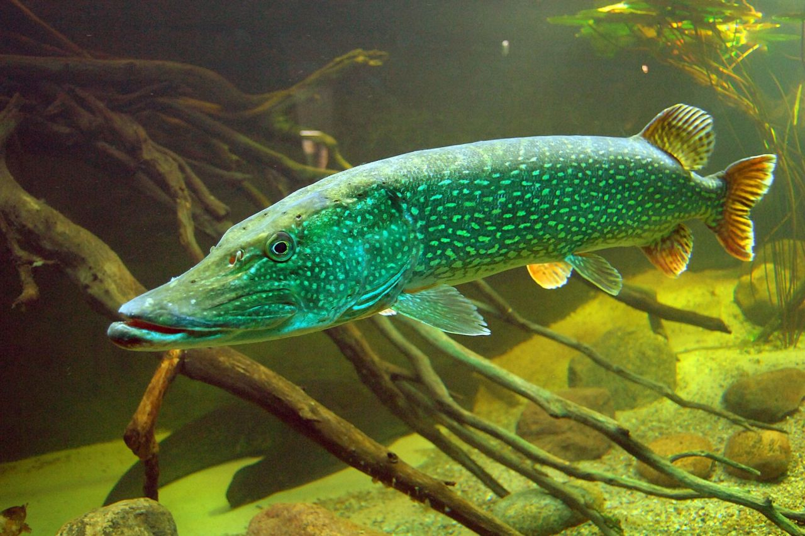
- 🌡️Весна (апрель–май): Запрет.
Щука нерестится первой, сразу после схода льда,
при воде 4–6 °C. В прибрежных водах и нерестовых
реках действуют общие ограничения на вылов.
Короткий преднерестовый жор — не повод нарушать.
- ☀️Лето (июнь–август): Пик сезона.
После нереста у щуки начинается посленерестовый жор.
Ловля открывается с окончанием запрета.
Именно в этот период щука активно кормится,
но из-за жары и цветения воды держится в густых зарослях,
коряжниках и ямах. Лучшее время — рассвет и закат,
короткими выходами.
- 🍂Осень (сентябрь–ноябрь): Завершение сезона.
Вода остывает до +12…+15 °C — начинается осенний жор.
-
❄️Зима (декабрь–февраль): Запрет в ряде регионов.
Нерестовые реки закрыты, щука скатывается на глубину.
В ряде водоёмов действуют зимние ограничения.
Первый лёд (1–3 недели) — отличный клёв, глухозимье — вяло.
Окунь
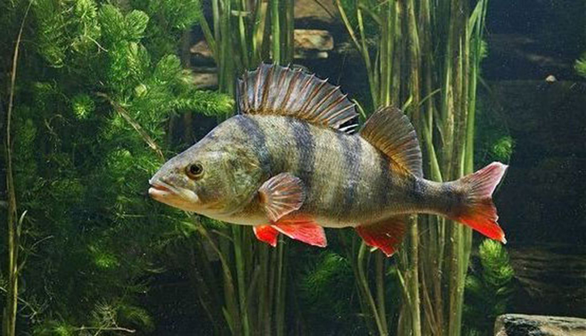
- 🌡️ Весна (апрель — начало нереста): Пик сезона.
Как только вода прогревается до +4–6°C, начинается жор.
Окунь агрессивен, собирается в стаи и выходит на прогретые мелководья
(1–2,5 м) и в заливы. Как только вода достигает +7–10°C, начинается нерест,
и клёв стихает .
- ☀️Лето (июнь — август): После нереста активность быстро восстанавливается.
Мелкий и средний окунь охотится стаями на мелководье («котлы»),
крупный «горбач» предпочитает глубины, бровки и коряжники.
Лучшее время — рассвет и вечерняя зоря .
- 🍂Осень (сентябрь — ноябрь): В начале осени активность высокая,
рыба жирует перед зимой. К октябрю окунь собирается в стаи на глубине
и хорошо реагирует на блесны .
С приходом холодов клёв постепенно сходит на нет,
и рыба скатывается на зимние стоянки .
- ❄️Зима (первый и последний лёд): Лучшее время для активной ловли со льда.
Окунь держится у берега и на отмелях,
часто поднимаясь к самой кромке льда из-за нехватки кислорода
и скопления малька .
В глухозимье (середина зимы) рыба уходит на глубину к коряжникам и бровкам,
клёв становится вялым .
Судак
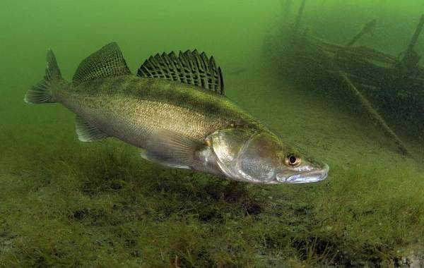
-
🌡️ Весна (конец мая – июнь):
После отмены запрета вода ещё прохладная, судак после нереста проявляет сильный аппетит.
Первые 2–3 недели — золотое окно.
Джиг и воблеры вдоль береговых бровок дают наилучший эффект,
причём активнее всего судак в сумерках.
- ☀️Лето (июль–август): Самый сложный период.
Днём крупный судак уходит на глубину, держится у свалов, мостовых опор,
затопленных сооружений, у поверхности только мелочь.
Пиковые периоды — рассвет и закат;
в сильную жару ночью возможен выход хищника.
В польдерах и городских каналах вдоль каменных берегов ещё можно
с берега достать джигом или воблером, но требуется терпение.
- 🍂Осень (сентябрь–ноябрь): Лучший сезон для трофеев за весь год.
Температура воды падает, содержание кислорода растёт,
судак начинает группироваться в стаи и активно кормиться.
Сентябрь — переходный месяц, рыба уже активна,
но не ушла на зимние глубины; октябрь обычно считается пиком сезона.
Тяжёлые джиги, крупные силиконовые приманки,
глубоководные воблеры — в фокусе, русловые бровки и глубокие свалы — ключевые точки.
- ❄️Зима (декабрь–март): Поклёвки редкие, рыба крайне пассивна.
В Нидерландах зимой редко устанавливается устойчивый лёд, по льду ловить почти невозможно,
поэтому чаще всего ловят с лодки на глубоких ямах.
Лучшие окна — в периоды оттепели или после нескольких тёплых дней подряд,
и только при очень медленной проводке возможен выход рыбы на кормёжку.
Ерш
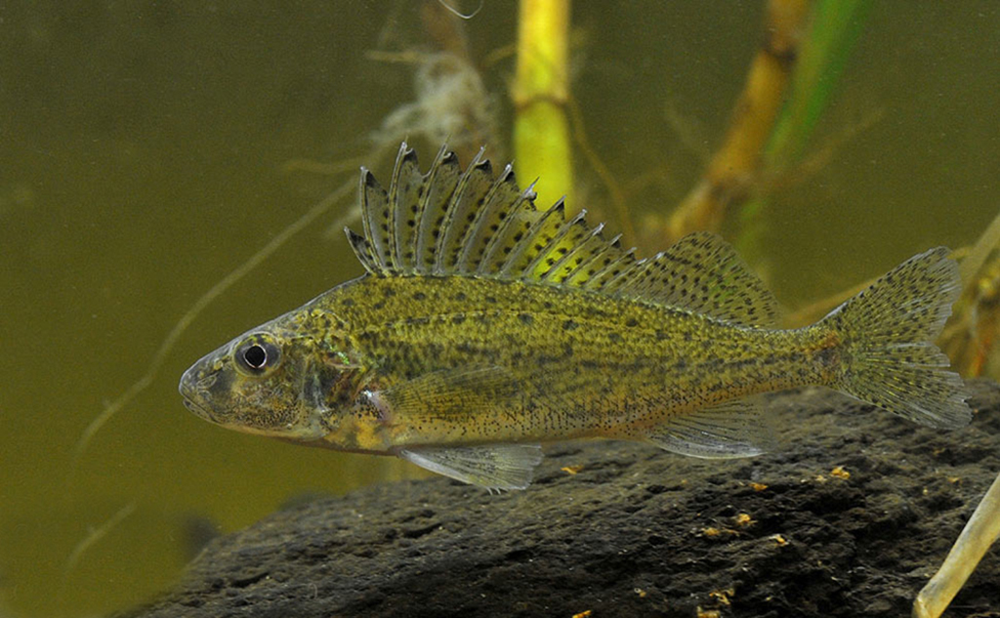
- 🌡️Весна (март – май):
Ерш начинает активизироваться после зимнего оцепенения,
как только вода прогревается до 6–8 °C.
Нерест происходит с апреля по июнь, в зависимости от температуры.
В этот период ерш держится у дна на мелководье,
у каменных берегов, свай и мостовых опор.
Лучшие приманки — мормышка с червём, опарышем или мотылём. Важно:
с 1 апреля по последнюю субботу мая во многих водах действует запрет
на искусственные приманки и кусочки рыбы — используйте только натуральные насадки.
В польдерах и каналах весной ерша можно ловить с берега поплавочной удочкой.
- ☀️Лето (июнь – август):
Самый стабильный период.
Ерш активен круглосуточно, но крупные особи лучше берут в сумерках и ночью.
Днём мелочь стоит у берега, крупный ерш отходит на глубину 2–5 м,
к свалам и русловым бровкам.
В городских каналах вдоль каменных стенок ловится с берега. Приманки:
мормышка, донка с червём, мелкий силикон.
В жару ерш может уходить в тень мостов и затопленных конструкций.
- 🍂Осень (сентябрь – ноябрь):
Отличный сезон. Ерш сбивается в стаи и активно кормится перед зимой.
Крупные особи подходят ближе к берегу и на мелководье.
Лучшее время — с рассвета до полудня и перед закатом.
Приманки: мормышка с мотылём, червь, опарыш, мелкие джиг-приманки.
В октябре–ноябре возможны трофейные экземпляры до 25–30 см.
- ❄️Зима (декабрь – март):
В Нидерландах устойчивый лёд — редкость, поэтому ловля по льду почти невозможна.
Ерш остаётся активным и зимой, но поклёвки вялые.
Ловят с лодки или с берега на глубоких ямах, у русловых бровок.
Лучшие окна — оттепели и несколько тёплых дней подряд.
Проводка должна быть очень медленной, у самого дна.
Приманки: мелкая мормышка с мотылём, червь.
Форель
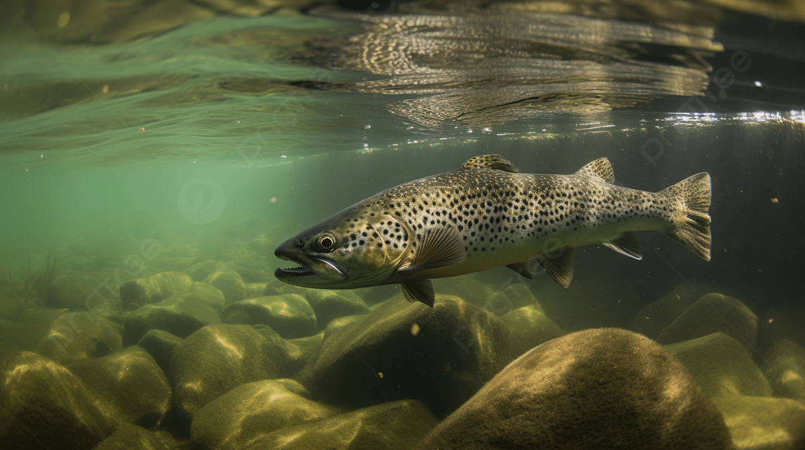
- 🌡️Весна (март – май): Форель активизируется после зимнего застоя,
как только вода прогревается до 6–10 °C.
Нерест — с апреля по май (у ручьевой и радужной — свои сроки).
В этот период рыба держится на перекатах, у каменистых берегов,
за валунами и у впадения ручьёв.
Лучшие приманки — мелкие вертушки №0–2, микроколебалки, воблеры-минноу,
нахлыстовые нимфы и мокрые мушки.
Важно: во многих водах весной действует запрет на искусственные приманки
в нерестовых зонах — используйте натуральные насадки (червь, личинка)
или ловите в разрешённых участках.
В каналах и польдерах весной форель можно ловить с берега поплавочной удочкой.
- ☀️Лето (июнь – август):
Самый капризный период.
В жару форель уходит на глубину, к родникам и холодным ключам.
Активна на рассвете и перед закатом, днём — почти не берёт.
В горных реках и на быстринах держится круглосуточно.
Крупные особи стоят в тени мостов,
у затопленных конструкций и на русловых бровках.
Приманки: мелкие вертушки, микровоблеры, нахлыстовые сухие мушки и нимфы.
В платных прудах — паста, креветка, блесна.
В жару ищите самую холодную воду — там концентрация рыбы максимальная.
- 🍂Осень (сентябрь – ноябрь):
Отличный сезон. Форель сбивается в стаи и активно кормится перед нерестом.
Крупные особи подходят ближе к берегу и на мелководье.
Лучшее время — с рассвета до полудня и перед закатом.
Приманки: вертушки, колебалки, воблеры, нахлыст (стримеры, нимфы), червь, опарыш.
В октябре–ноябре возможны трофейные экземпляры до 30–50 см и крупнее.
- ❄️Зима (декабрь – март):
В Нидерландах устойчивый лёд — редкость, поэтому ловля по льду почти невозможна.
Форель остаётся активной на незамерзающих участках рек,
у родников и сбросов тёплых вод.
Ловят с лодки или с берега на глубоких ямах, у русловых бровок.
Лучшие окна — оттепели и несколько тёплых дней подряд.
Проводка должна быть очень медленной, у самого дна.
Приманки: мелкая мормышка с мотылём, червь, микроблесны.
В платных прудах форель клюёт круглый год.
Змееголов
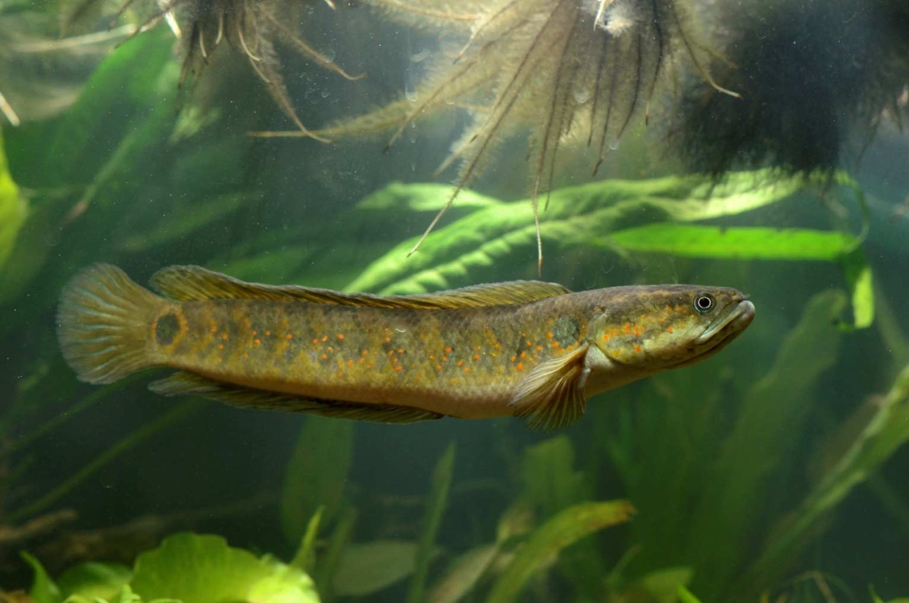
- 🌡️Весна (апрель – май): Сезон открывается, как только сходит лёд.
В мае рыба ещё держится на глубине 2–2,5 м,
но по мере прогрева воды начинает выдвигаться на мелководье.
Первый всплеск активности — при прогреве мелководья до 20 °C
(на юге это март–апрель, в средней полосе — май).
- ☀️Лето (июнь – август): Лучший период.
Змееголов активно кормится в травяных заводях, коряжнике, среди кувшинок и элодеи.
Пик клёва — с 12:00 до 17:00, когда вода максимально прогрета.
- 🍂Осень (сентябрь – октябрь): Поклёвки ослабевают,
рыба постепенно уходит на глубину к ямам с илистым дном.
К октябрю сезон в большинстве регионов закрывается.
- ❄️Зима: Змееголов уходит на глубину и практически не ловится.
Сезон возобновляется только после схода льда.
Таймень
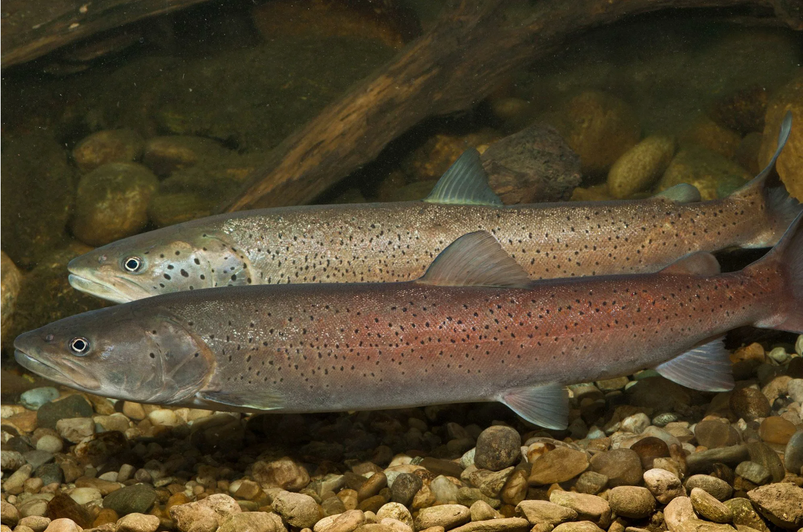
- 🌡️Весна (май — июнь)
После нереста: Нерест обычно в мае–середине июня.
После него таймень начинает питаться, но активность средняя, не пик.
Некоторые исследования отмечают падение упитанности после нереста.
Где стоит: Скатывается с притоков вниз, держится в глубоких ямах, заводях, у перекатов.
⚠️ Важно: Май–июнь — нерестовый период.
В России и сопредельных странах в это время действуют запреты на ловлю
в большинстве регионов.
Таймень во многих водоёмах — охраняемый вид,
поэтому окно ловли узкое и сильно ограничено правилами.
- ☀️Лето (июль — август)
«Стабильный клёв» — только для холодных рек: В жару таймень уходит на глубину,
к устьям холодных притоков, активен в сумерках и ночь.
В таёжных и горных реках с холодной водой клёв может быть стабильным,
но в равнинных реках это слабый сезон.
Ночная охота: Да, летом таймень часто охотится в сумерках и ночью,
но «мышь» (мышкование) — это всё же классика осени, летом нестабилен.
- 🍂 Осень (сентябрь — октябрь)
Лучший период: С сентября начинается осенний жор, который длится до ледостава.
Это главное окно для трофейной ловли.
Крупные приманки и «мышь»:
Именно осенью поверхностные приманки типа «мышь» работают лучше
всего — таймень охотно берёт их.
С похолоданием: Уходит на зимовальные ямы, концентрируется в глубоких участках.
- ❄️ Зима
В большинстве регионов ловля запрещена.
Исключение: В отдельных местах возможна ловля по открытой воде незамерзающих рек
(например, некоторые участки в Сибири и на Дальнем Востоке),
но это редкость и строго по правилам региона.
Язь
.jpg)
- 🌡️Весна (апрель–май): Активизация после нереста.
Ловится на фидер или проводку в местах с течением.
Важно: в этот период во многих регионах действует нерестовый запрет,
и ловить можно только с берега на поплавочную/донную удочку с ограниченным
числом крючков
(обычно 2) .
- ☀️ Лето (июнь–август): Лучшее время для спиннинга.
Язь активно охотится на перекатах и в «котлах». В жару может кормиться ночью .
- 🍂Осень (сентябрь): Клев затихает к концу месяца. Рыба отходит на глубину,
но продолжает брать на медленные проводки и естественные приманки .
- ❄️Зима (декабрь–март): Ловля возможна со льда, но она сложнее и имеет свои пики активности:
перволедье (декабрь) и последний лед (февраль–март) .
Берш
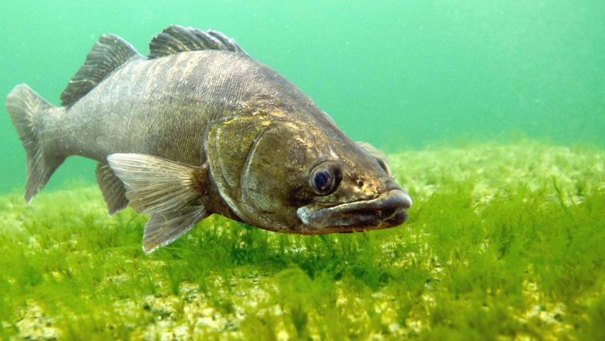
- 🌡️Весна (март–май)
Активизация: Интенсивный откорм начинается в конце марта при прогреве воды выше 10°C .
После нереста (апрель–май, при 10–22°C) берш кормится почти весь день .
Особенность: В период нереста клев может полностью отсутствовать .
- ☀️Лето (июнь–август)
Активизация: Жор постепенно затихает из-за жары.
Берш уходит на глубину, и поймать его проще всего на утренней или вечерней заре .
Особенность: В жаркую погоду активность может смещаться на ночные часы .
- 🍂Осень (сентябрь–ноябрь)
Активизация: Лучшее время для целенаправленной ловли.
С похолоданием жор возобновляется с новой силой и продолжается вплоть до ледостава .
Особенность: Именно осенью (особенно в ноябре) выше шанс поймать трофейный экземпляр .
- ❄️Зима (декабрь–март)
Активизация: Ловля со льда возможна, но имеет свои пики: перволедок и последний лед .
Особенность: Если найти стоянку стаи, с одной лунки можно вытащить несколько десятков рыб .
Сом
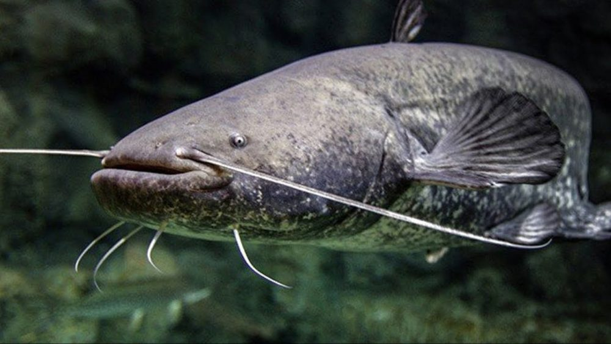
- 🌡️Весна (апрель–май)
Здесь «открытие сезона» тоже условное. Формально ловить можно,
но действует нерестовый запрет: обычно разрешена одна поплавочная или донная удочка с берега,
максимум 2 крючка и вне нерестилищ . Рыба после схода льда ещё вялая, держится на глубине,
активно не гоняет. Так что донка или поплавочная снасть на этом этапе логичнее,
чем расчёт на активный клёв хищника. В южных регионах (Астрахань)
сом может начать проявлять себя уже в апреле, но это скорее локальное исключение .
- ☀️Лето (июнь–август)
Противоречий нет — это лучший период. Ограничения сняты, рыба активна,
кормится в траве, заводях, коряжнике. Пик клёва привязан к прогреву воды выше +18°C,
особенно в утренние и вечерние часы .
Июнь — время посленерестового жора, когда сом особенно жаден .
Именно в этот период работает классическая ловля на квок,
и ночью попадаются самые крупные экземпляры .
- 🍂Осень (сентябрь–октябрь)
Тут важное уточнение: утверждение про «осенний жор»
как устойчивую закономерность подтверждения не находит.
Данные говорят скорее о постепенном снижении активности и уходе рыбы на глубину .
В некоторых южных регионах (Кубань, низовья Волги)
в октябре действительно возможен всплеск клёва, связанный с ходом сома на зимовку,
но это скорее локальная особенность, чем общее правило .
К октябрю сезон во многом сворачивается,
а с 1 октября вступает в силу запрет на зимовальных ямах .
- ❄️Зима
Полностью совпадает — рыбалка фактически замирает,
ловля на зимовальных ямах запрещена, активность минимальна .
Сом впадает в оцепенение, пищеварительные ферменты практически не работают,
и поклёвки носят единичный характер .
Сезон возобновляется только после схода льда и окончания весенних ограничений.
Лосось
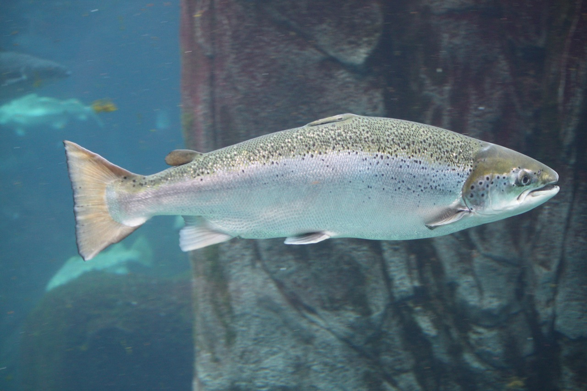
-
🌡️Весна (апрель–май): Запрет. Рыба ещё не зашла в реки,
а в прибрежных водах действуют общие ограничения на вылов анадромных видов .
-
☀️Лето (июнь–август): Пик сезона.
На Камчатке любительская рыбалка открывается 1 июня
(кроме бассейнов Паратунки и Авачи — там позже) .
В Магаданской области промышленный лов в заливе Шелихова стартует с 1 июня .
Именно в этот период идёт активный ход горбуши, кеты и нерки.
- 🍂Осень (сентябрь–октябрь): Завершение путины.
Сроки запрета обычно устанавливаются не позднее 31 октября .
В Магаданской области лов в ряде районов может длиться до 30 сентября .
К концу октября ход рыбы сходит на нет.
-
❄️ Зима: Запрет. Нерестовые реки закрыты, рыба скатывается в море.
Голавль
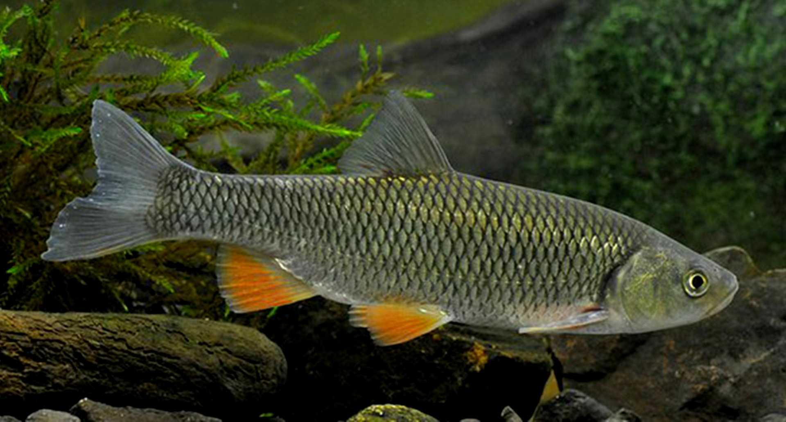
- 🌡️Весна (апрель–май): Начало сезона после паводка.
В это время рыба активна, но может держаться глубоких мест .
- ☀️Лето (июнь–август): Пик активности. Июнь считается идеальным месяцем,
август также очень хорош («золотой сезон»),
а июль может быть хуже из-за цветения воды
и перехода рыбы на питание водорослями .
- 🍂Осень (сентябрь–октябрь): Стабильный клёв в сентябре.
В октябре активность снижается, но рыба продолжает ловиться,
особенно у берегов и на ямах .
- ❄️Зима (декабрь–февраль): Лучшее время — первый и последний лёд.
В глухозимье клёв почти прекращается.
Рыба стоит на глубоких ямах рядом с быстринами.